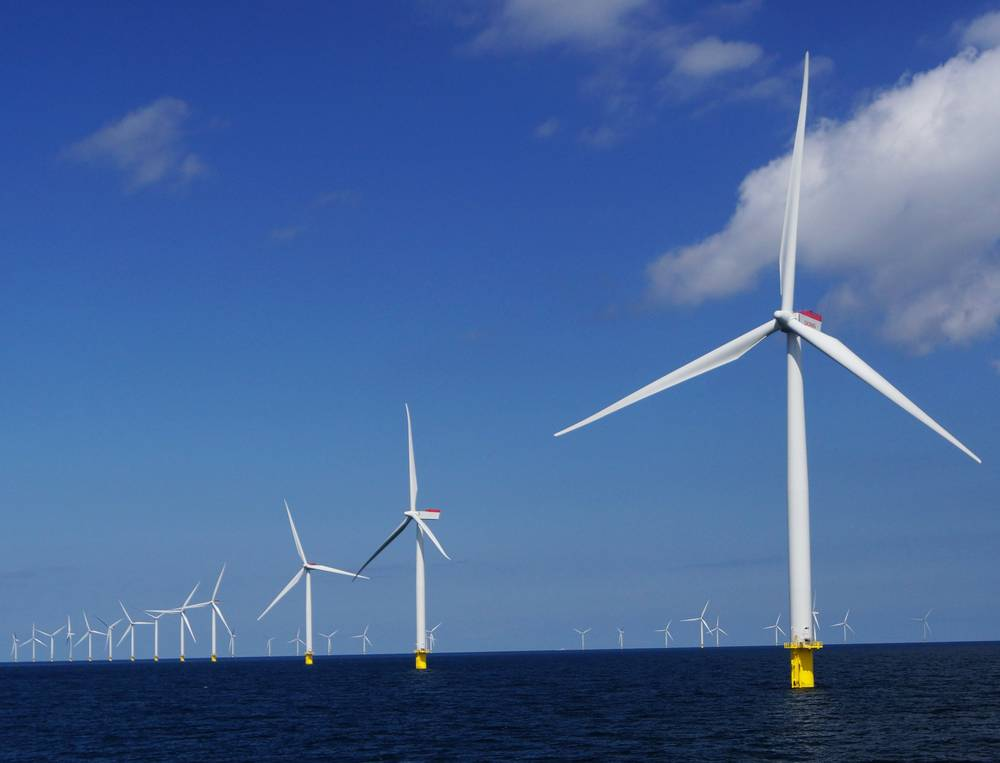

박찬대 인천시장, 오스테드 경영진 만났지만…어민들 "협의체 끊고 시장만 독대" 반발

1.47GW 인천해상풍력 허가 3년째 답보·입찰 보류…환경단체 "전담조직부터", 시 "구체 논의 없던 인사 자리"
박찬대 인천시장이 12일 시청에서 덴마크 해상풍력 기업 오스테드의 아만다 다쉬 그룹 개발총괄사장 등 대표단을 만나 지역 기업 참여와 청년 일자리를 요청했지만, 지역 어민과 환경단체는 소통 없는 '보여주기 만남'이라고 비판하고 있다. 오스테드는 2023년 옹진군 덕적도 서쪽 35~70㎞ 해역에 1.47GW 규모 인천해상풍력 1·2호 발전사업 허가를 받았으나 3년째 후속 인허가를 마치지 못했고, 8월에는 사업성을 이유로 하반기 입찰 참여를 보류한 채 사업 재설계에 들어갔다. 건설 거점으로도 인천 대신 충남 당진항을 검토하고 있다.
어민들은 오스테드가 운영하던 해상풍력 지역협의회와 선주협의회가 올해 초부터 잇따라 종료된 뒤 연락이 사실상 끊겼다고 말한다. 박덕신 인천자망협회장은 사업 진정성이 의심돼 받아들이려던 어민들까지 돌아섰다며 공식 협의체부터 되살려야 한다고 주장했다. 인천환경운동연합은 시 해상풍력 전담 인력이 3명뿐이라며 어업인 갈등 조정과 지역 이익공유를 시가 직접 챙겨야 한다고 지적했다.
인천시는 오스테드 본사가 국내 해상풍력 흐름을 살피러 정부·국회와 함께 시를 찾은 것으로, 구체적 사업 논의나 협의체 관련 요청은 없었다고 설명했다. 전담 인력은 업무량에 맞춰 단계적으로 늘리겠다고 밝혔다.
시민에너지 관점
덴마크는 2009년부터 2020년까지 새 풍력단지 지분의 20% 이상을 인근 주민에게 먼저 내놓게 해, 바다와 땅을 내준 사람이 사업의 주인이 되도록 했다. 1.47GW 사업이 3년째 멈춘 이유를 어민 반대에서만 찾는다면, 스스로 협의체를 닫은 개발사의 태도는 설명되지 않는다. 어민과 섬 주민이 지분과 수익을 나누는 구조가 있어야 해상풍력은 '남의 사업'이 아니라 지역의 자산이 된다. 인천시는 경영진 접견보다 먼저 어민 협의체 복원과 주민 이익공유를 지원의 조건으로 분명히 내걸어야 한다.
출처: 인천투데이 2026-11-13 김윤정 원문 보기
朴燦大仁川市長、オーステッド経営陣と面会も…漁業者「協議体を断ち市長とだけ会談」と反発
1.47GWの仁川洋上風力、許可から3年停滞・入札も保留…環境団体「まず専任組織を」、市「具体的協議のない表敬の場」
朴燦大（パク・チャンデ）仁川市長は12日、市庁でデンマークの洋上風力企業オーステッドのアマンダ・ダッシュ グループ開発総括社長ら代表団と会い、地元企業の参加と若者の雇用を要請したが、地元の漁業者と環境団体は対話のない「見せるための面会」だと批判している。オーステッドは2023年、甕津郡徳積島の西35～70kmの海域に1.47GW規模の仁川洋上風力1・2号の発電事業許可を受けたが、3年たっても後続の許認可を終えておらず、8月には事業性を理由に下半期の入札参加を保留して事業の再設計に入った。建設拠点も仁川ではなく忠清南道の唐津港を検討している。
漁業者らは、オーステッドが運営していた洋上風力地域協議会と船主協議会が今年初めから相次いで終了した後、連絡が事実上途絶えたと話す。朴徳信（パク・ドクシン）仁川刺し網協会長は、事業の真剣さが疑わしく、受け入れようとしていた漁業者まで背を向けたとして、まず公式の協議体を復活させるべきだと主張した。仁川環境運動連合は、市の洋上風力専任人員が3人しかいないとして、漁業者との対立調整と地域の利益共有を市が直接担うべきだと指摘した。
仁川市は、オーステッド本社が国内の洋上風力の動向を把握するため政府・国会とともに市を訪れたもので、具体的な事業協議や協議体に関する要請はなかったと説明した。専任人員は業務量に合わせて段階的に増やすとしている。
市民エネルギーの視点
デンマークは2009年から2020年まで、新しい風力発電所の持分の20％以上を近隣住民に優先して提供させ、海や土地を差し出した人が事業の持ち主になれるようにした。1.47GWの事業が3年間止まっている理由を漁業者の反対だけに求めるなら、自ら協議体を閉じた開発会社の姿勢は説明できない。漁業者と島の住民が持分と収益を分け合う仕組みがあってこそ、洋上風力は「他人の事業」ではなく地域の資産になる。仁川市は経営陣との面会より先に、漁業者協議体の復活と住民の利益共有を支援の条件として明確に掲げるべきだ。
出典: 인천투데이 2026-11-13 김윤정 原文を読む
仁川市长朴灿大会见沃旭高管…渔民反弹：“关掉协商机制却只和市长单独会面”
1.47GW仁川海上风电获批3年仍停滞、暂缓投标…环保团体：“先建专职机构”，市政府：“只是礼节性会面，未谈具体内容”
仁川市长朴灿大12日在市政府会见丹麦海上风电企业沃旭（Ørsted）集团开发总裁阿曼达·达施等代表团，要求让本地企业参与并为青年提供就业，但当地渔民和环保团体批评这是一次缺乏沟通的“作秀会面”。沃旭于2023年获得在瓮津郡德积岛以西35至70公里海域建设1.47GW仁川海上风电1、2号项目的发电许可，但三年来仍未完成后续审批，8月还以项目收益不足为由暂缓参加下半年招标，并着手重新设计项目。其施工基地也在考虑放在忠清南道唐津港，而非仁川。
渔民们表示，沃旭此前运营的海上风电地区协商会和船主协商会从今年年初起相继终止，此后联系几乎中断。仁川刺网协会会长朴德信说，项目诚意令人怀疑，连原本打算接受的渔民也转为反对，应先恢复正式的协商机制。仁川环境运动联合指出，市政府海上风电专职人员只有3人，渔民矛盾调解和地方利益共享应由市政府亲自负责。
仁川市解释称，沃旭总部是为了解韩国海上风电动向，在拜访政府和国会的同时来访市政府，并未讨论具体项目，也没有提出协商机制方面的请求。市政府表示将根据工作量逐步增加专职人员。
市民能源视角
丹麦在2009年至2020年间要求新建风电场把20%以上的股份优先出售给附近居民，让让出海域和土地的人成为项目的主人。如果只把1.47GW项目停滞三年的原因归于渔民反对，就无法解释开发商自己关闭协商机制的做法。只有让渔民和岛上居民分享股份与收益，海上风电才会成为地方的资产，而不是“别人的生意”。仁川市应当在会见企业高管之前，先把恢复渔民协商机制和居民利益共享明确列为支持条件。
来源: 인천투데이 2026-11-13 김윤정 查看原文
Incheon mayor meets Ørsted executives, but fishers object: 'They shut the council and met only the mayor'
1.47GW Incheon offshore wind project stalled three years after permit, bid on hold; green group says build a dedicated team first, city calls it a courtesy visit
Incheon Mayor Park Chan-dae met a delegation led by Ørsted group development head Amanda Dasch at city hall on the 12th and asked the Danish offshore wind company to involve local firms and create jobs for young people, but local fishers and environmental groups have criticised it as a 'photo-op' held without consultation. Ørsted received a generation licence in 2023 for the 1.47GW Incheon Offshore Wind 1 and 2 projects, 35 to 70km west of Deokjeok Island in Ongjin County, but has not completed the follow-up permits after three years, and in August it put its bid in this year's second-half auction on hold and began redesigning the project. It is also considering Dangjin port in South Chungcheong rather than Incheon as its construction base.
Fishers say contact has all but stopped since the regional offshore wind council and shipowners' councils run by Ørsted were wound up one after another from early this year. Park Deok-sin, head of the Incheon gillnet association, said doubts about the company's sincerity have turned even fishers who had been willing to accept the project against it, and that the official council must be revived first. The Incheon Korean Federation for Environmental Movement pointed out that the city has only three staff dedicated to offshore wind and said the city should directly handle conflict mediation with fishers and local benefit-sharing.
The city said Ørsted's headquarters visited as part of meetings with the government and the National Assembly to gauge Korea's offshore wind market, and that no specific project matters or requests about the council were discussed. It added that it would gradually add staff as the workload grows.
Citizen Energy View
From 2009 to 2020 Denmark required new wind farms to offer at least 20% of their shares to nearby residents first, so that people who gave up sea and land became owners of the project. Blaming a three-year stall on fishers' opposition alone does not explain a developer that closed its own consultation council. Only when fishers and islanders share equity and revenue does offshore wind become a local asset rather than 'someone else's business'. Before receiving executives, Incheon should make restoring the fishers' council and resident benefit-sharing clear conditions for its support.
Source: 인천투데이 2026-11-13 김윤정 Read the original